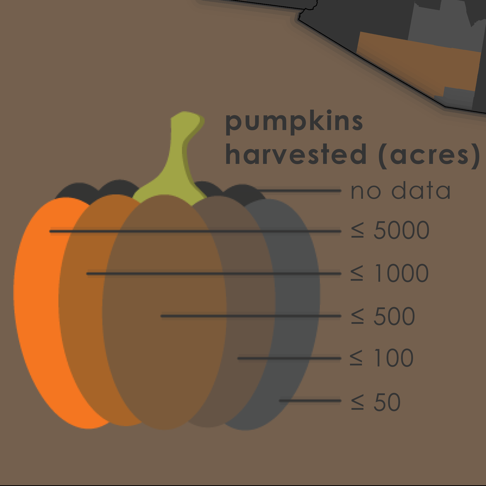
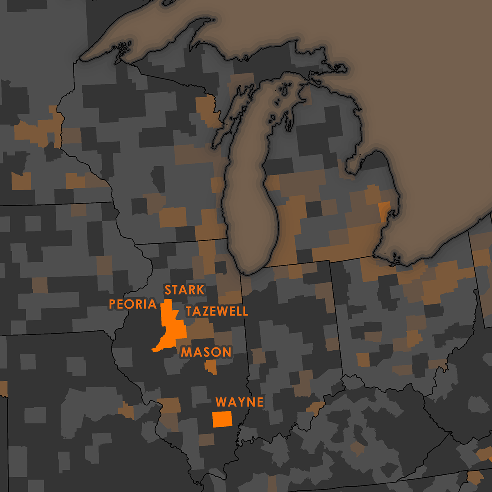

My main goal with this map was to come up with a creative way to transform the legend from the typical block-based key in most maps. Using the above listed pumpkin tutorial as the foundation, I played around in Adobe Illustrator for a fun, new way of communicating the map’s symbology. I think it turned out pretty slick:
Note that the counties with the most acres harvested are labeled... Who knew Illinois was our pumpkin capital?
